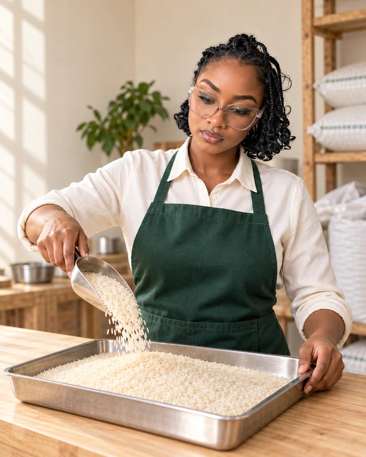

2016
Our first grain chapter
The business began in Kabale Town as a sole proprietorship, trading locally grown and imported rice.
A Ugandan grain-trading business, built around quality food, lasting relationships and the possibilities of agriculture.

Our ambition is to connect more farmers, businesses and food markets across Uganda and, over time, the wider region.
The business began in Kabale Town as a sole proprietorship, trading locally grown and imported rice.
Formal incorporation marked the next stage of our journey in grain trading, distribution and value addition.
Rice remains our core focus, alongside other staple grains and a newly introduced managed-vending service.
To help feed nations by making quality food fit for human consumption available.
To become a leading agribusiness trader across the region and beyond, contributing to jobs and food security.
To source and distribute quality, nutritious food through good agricultural practices that support sustainable growth.
Keeping the quality of the food we source and distribute at the centre of our work.
Building dependable ways of working and long-term business relationships.
Listening first, so our conversations begin with your actual needs.
Looking for thoughtful ways to grow, improve access and support our food future.
Tell us what you need. We’ll take it from there.